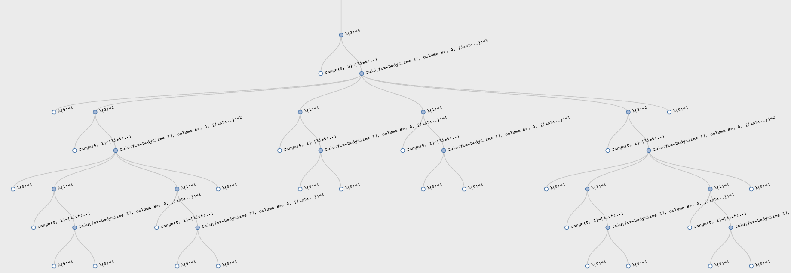

22 Avoiding Recomputation by Remembering Answers
We have on several instances already referred to a ☛ space-time tradeoff. The most obvious tradeoff is when a computation “remembers” prior results and, instead of recomputing them, looks them up and returns the answers. This is an instance of the tradeoff because it uses space (to remember prior answers) in place of time (recomputing the answer). Let’s see how we can write such computations.
22.1 An Interesting Numeric Sequence
Suppose we want to create properly-parenthesized expressions, and ignore all non-parenthetical symbols. How many ways are there of creating parenthesized expressions given a certain number of opening (equivalently, closing) parentheses?
If we have zero opening parentheses, the only expression we can create is the empty expression. If we have one opening parenthesis, the only one we can construct is “()” (there must be a closing parenthesis since we’re interested only in properly-parenthesized expressions). If we have two opening parentheses, we can construct “(())” and “()()”. Given three, we can construct “((()))”, “(())()”, “()(())”, “()()()”, and “(()())”, for a total of five. And so on. Observe that the solutions at each level use all the possible solutions at one level lower, combined in all the possible ways.
There is actually a famous mathematical sequence that corresponds to the number of such expressions, called the Catalan sequence. It has the property of growing quite large very quickly: starting from the modest origins above, the tenth Catalan number (i.e., tenth element of the Catalan sequence) is 16796. A simple recurrence formula gives us the Catalan number, which we can turn into a simple program:
Object catalan(n) {
return if (n == 0) {
return 1;
} else if (n > 0) {
return [for fold(acc : 0, k : range(0, n)) { yield acc + (catalan(k) * catalan(n - 1 - k)); }];
}
}This function’s tests look as follows—
@Check void test() {
assertEquals(catalan(0), 1);
assertEquals(catalan(1), 1);
assertEquals(catalan(2), 2);
assertEquals(catalan(3), 5);
assertEquals(catalan(4), 14);
assertEquals(catalan(5), 42);
assertEquals(catalan(6), 132);
assertEquals(catalan(7), 429);
assertEquals(catalan(8), 1430);
assertEquals(catalan(9), 4862);
assertEquals(catalan(10), 16796);
assertEquals(catalan(11), 58786);
}but beware! When we time the function’s execution, we find that the
first few tests run very quickly, but somewhere between a value of
10
and
20—depending
on your machine and programming language implementation—you ought to see
things start to slow down, first a little, then with extreme effect.
Do Now!
Check at what value you start to observe a significant slowdown on your machine. Plot the graph of running time against input size. What does this suggest?
The reason the Catalan computation takes so long is precisely because of what we alluded to earlier: at each level, we depend on computing the Catalan number of all the smaller levels; this computation in turn needs the numbers of all of its smaller levels; and so on down the road.
Exercise
Map the subcomputations of
catalanto see why the computation time explodes as it does. What is the worst-case time complexity of this function?
Here is a graphical representation of all the sub-computations the
Catalan function does for input
3:

Observe the very symmetric computation, reflecting the formula.
22.1.1 Using State to Remember Past Answers
Therefore, this is clearly a case where trading space for time is likely to be of help. How do we do this? We need a notion of memory that records all previous answers and, on subsequent attempts to compute them, checks whether they are already known and, if so, just returns them instead of recomputing them.
Do Now!
What critical assumption is this based on?
Naturally, this assumes that for a given input, the answer will always be the same. As we have seen, functions with state violate this liberally, so typical stateful functions cannot utilize this optimization. Ironically, we will use state to implement this optimization, so we will have a stateful function that always returns the same answer on a given input—and thereby use state in a stateful function to simulate a stateless one. Groovy, dude!
First, then, we need some representation of memory. We can imagine several, but here’s a simple one:
data MemoryCell {
Mem(in, out);
}
var memory = empty;Now how does
catalan
need to change? We have to first look for whether the value is already
in
memory;
if it is, we return it without any further computation, but if it isn’t,
then we compute the result, store it in
memory,
and then return it:
int catalan(int n) {
answer = find((elt) -> elt.in == n, memory);
return switch (answer) {
case None: yield block {
result = if (n == 0) {
return 1;
} else if (n > 0) {
return [for fold(acc : 0, k : range(0, n)) { yield acc + (catalan(k) * catalan(n - 1 - k)); }];
}
memory = link(mem(n, result), memory);
return result;
};
case Some(v): yield v.out;
}
}And that’s it! Now running our previous tests will reveal that the
answer computes much quicker, but in addition we can dare to run bigger
computations such as
catalan(50).
Do Now!
Trace through a call of this revised function and see how many calls it makes.
Here is a revised visualization of computing for input
3:

Observe the asymmetric computation: the early calls perform the computations, while the latter calls simply look up the results.
This process, of converting a function into a version that remembers its past answers, is called memoization.
22.1.2 From a Tree of Computation to a DAG
What we have subtly done is to convert a tree of computation into a DAG over the same computation, with equivalent calls being reused. Whereas previously each call was generating lots of recursive calls, which induced still more recursive calls, now we are reusing previous recursive calls—i.e., sharing the results computed earlier. This, in effect, points the recursive call to one that had occurred earlier. Thus, the shape of computation converts from a tree to a DAG of calls.
This has an important complexity benefit. Whereas previously we were
performing a super-exponential number of calls, now we perform only one
call per input and share all previous calls—thereby reducing
catalan(n)
to take a number of fresh calls proportional to
n.
Looking up the result of a previous call takes time proportional to the
size of
memory
(because we’ve represented it as a list; better representations would
improve on that), but that only contributes another linear
multiplicative factor, reducing the overall complexity to quadratic in
the size of the input. This is a dramatic reduction in overall
complexity. In contrast, other uses of memoization may result in much
less dramatic improvements, turning the use of this technique into a
true engineering trade-off.
22.1.3 The Complexity of Numbers
As we start to run larger computations, however, we may start to
notice that our computations are starting to take longer than linear
growth. This is because our numbers are growing arbitrarily large—for
instance,
catalan(100)
is
896519947090131496687170070074100632420837521538745909320—and
computations on numbers can no longer be constant time, contrary to what
we said earlier [The
Size of the Input]. Indeed, when working on cryptographic problems,
the fact that operations on numbers do not take constant time are
absolutely critical to fundamental complexity results (and, for
instance, the presumed unbreakability of contemporary cryptography).
(See also Factoring Numbers.)
22.1.4 Abstracting Memoization
Now we’ve achieved the desired complexity improvement, but there is
still something unsatisfactory about the structure of our revised
definition of
catalan:
the act of memoization is deeply intertwined with the definition of a
Catalan number, even though these should be intellectually distinct.
Let’s do that next.
In effect, we want to separate our program into two parts. One part
defines a general notion of memoization, while the other defines
catalan
in terms of this general notion.
What does the former mean? We want to encapsulate the idea of “memory” (since we presumably don’t want this stored in a variable that any old part of the program can modify). This should result in a function that takes the input we want to check; if it is found in the memory we return that answer, otherwise we compute the answer, store it, and return it. To compute the answer, we need a function that determines how to do so. Putting together these pieces:
data MemoryCell {
Mem(in, out);
}
/* arrow-ann */ Object memoize-1(/* arrow-ann */ Object f) {
var memory = empty;
return (n) -> {
answer = find((elt) -> elt.in == n, memory);
return switch (answer) {
case None: yield block {
result = f(n);
memory = link(mem(n, result), memory);
return result;
};
case Some(v): yield v.out;
}
}
}We use the name
memoize-1
to indicate that this is a memoizer for single-argument functions.
Observe that the code above is virtually identical to what we had
before, except where we had the logic of Catalan number computation, we
now have the parameter
f
determining what to do.
With this, we can now define
catalan
as follows:
rec catalan = memoize-1((n) -> if (n == 0) {
return 1;
} else if (n > 0) {
return [for fold(acc : 0, k : range(0, n)) { yield acc + (catalan(k) * catalan(n - 1 - k)); }];
});Note several things about this definition:
- We don’t write
fun catalan(...): ...;because the procedure bound tocatalanis produced bymemoize-1. - Note carefully that the recursive calls to
catalanhave to be to the function bound to the result of memoization, thereby behaving like an object. Failing to refer to this same shared procedure means the recursive calls will not be memoized, thereby losing the benefit of this process. - We need to use
recfor reasons we saw earlier [Streams From Functions]. - Each invocation of
memoize-1creates a new table of stored results. Therefore the memoization of different functions will each get their own tables rather than sharing tables, which is a bad idea!
Exercise
Why is sharing memoization tables a bad idea? Be concrete.
22.2 Edit-Distance for Spelling Correction
Text editors, word processors, mobile phones, and various other devices now routinely implement spelling correction or offer suggestions on (mis-)spellings. How do they do this? Doing so requires two capabilities: computing the distance between words, and finding words that are nearby according to this metric. In this section we will study the first of these questions. (For the purposes of this discussion, we will not dwell on the exact definition of what a “word” is, and just deal with strings instead. A real system would need to focus on this definition in considerable detail.)
Do Now!
Think about how you might define the “distance between two words”. Does it define a metric space?
Exercise
Will the definition we give below define a metric space over the set of words?
Though there may be several legitimate ways to define distances between words, here we care about the distance in the very specific context of spelling mistakes. Given the distance measure, one use might be to compute the distance of a given word from all the words in a dictionary, and offer the closest word (i.e., the one with the least distance) as a proposed correction.Obviously, we can’t compute the distance to every word in a large dictionary on every single entered word. Making this process efficient constitutes the other half of this problem. Briefly, we need to quickly discard most words as unlikely to be close enough, for which a representation such as a bag-of-words (here, a bag of characters) can greatly help. Given such an intended use, we would like at least the following to hold:
- That the distance from a word to itself be zero.
- That the distance from a word to any word other than itself be strictly positive. (Otherwise, given a word that is already in the dictionary, the “correction” might be a different dictionary word.)
- That the distance between two words be symmetric, i.e., it shouldn’t matter in which order we pass arguments.
Exercise
Observe that we have not included the triangle inequality relative to the properties of a metric. Why not? If we don’t need the triangle inequality, does this let us define more interesting distance functions that are not metrics?
Given a pair of words, the assumption is that we meant to type one but actually typed the other. Here, too, there are several possible definitions, but a popular one considers that there are three ways to be fat-fingered:
- we left out a character;
- we typed a character twice; or,
- we typed one character when we meant another.
In particular, we are interested in the fewest edits of these forms that need to be performed to get from one word to the other. For natural reasons, this notion of distance is called the edit distance or, in honor of its creator, the Levenshtein distance.See more on Wikipedia.
There are several variations of this definition possible. For now, we will consider the simplest one, which assumes that each of these errors has equal cost. For certain input devices, we may want to assign different costs to these mistakes; we might also assign different costs depending on what wrong character was typed (two characters adjacent on a keyboard are much more likely to be a legitimate error than two that are far apart). We will return briefly to some of these considerations later [Nature as a Fat-Fingered Typist].
Under this metric, the distance between “kitten” and “sitting” is 3
because we have to replace “k” with “s”, replace “e” with “i”, and
insert “g” (or symmetrically, perform the opposite replacements and
delete “g”). Here are more examples:
@Check void test() {
assertEquals(levenshtein(empty, empty), 0);
assertEquals(levenshtein(["x"], ["x"]), 0);
assertEquals(levenshtein(["x"], ["y"]), 1);
// one of about 600
assertEquals(levenshtein(["b", "r", "i", "t", "n", "e", "y"], ["b", "r", "i", "t", "t", "a", "n", "y"]), 3);
// http://en.wikipedia.org/wiki/Levenshtein_distance
assertEquals(levenshtein(["k", "i", "t", "t", "e", "n"], ["s", "i", "t", "t", "i", "n", "g"]), 3);
assertEquals(levenshtein(["k", "i", "t", "t", "e", "n"], ["k", "i", "t", "t", "e", "n"]), 0);
// http://en.wikipedia.org/wiki/Levenshtein_distance
assertEquals(levenshtein(["S", "u", "n", "d", "a", "y"], ["S", "a", "t", "u", "r", "d", "a", "y"]), 3);
// http://www.merriampark.com/ld.htm
assertEquals(levenshtein(["g", "u", "m", "b", "o"], ["g", "a", "m", "b", "o", "l"]), 2);
// http://www.csse.monash.edu.au/~lloyd/tildeStrings/Alignment/92.IPL.html
assertEquals(levenshtein(["a", "c", "g", "t", "a", "c", "g", "t", "a", "c", "g", "t"], ["a", "c", "a", "t", "a", "c", "t", "t", "g", "t", "a", "c", "t"]), 4);
assertEquals(levenshtein(["s", "u", "p", "e", "r", "c", "a", "l", "i", "f", "r", "a", "g", "i", "l", "i", "s", "t"], ["s", "u", "p", "e", "r", "c", "a", "l", "y", "f", "r", "a", "g", "i", "l", "e", "s", "t"]), 2);
}The basic algorithm is in fact very simple:
# TODO(pyret2jayret): parse failed (no shifts)
rec levenshtein :: (List<String>, List<String> -> Number) =
<levenshtein-body>where, because there are two list inputs, there are four cases, of
which two are symmetric:
# TODO(pyret2jayret): parse failed (no shifts)
lam(s, t):
<levenshtein-both-empty>
<levenshtein-one-empty>
<levenshtein-neither-empty>
endIf both inputs are empty, the answer is simple:
# TODO(pyret2jayret): parse failed (no shifts)
if is-empty(s) and is-empty(t): 0When one is empty, then the edit distance corresponds to the length
of the other, which needs to inserted (or deleted) in its entirety (so
we charge a cost of one per character):
# TODO(pyret2jayret): parse failed (no shifts)
else if is-empty(s): t.length()
else if is-empty(t): s.length()If neither is empty, then each has a first character. If they are the
same, then there is no edit cost associated with this character (which
we reflect by recurring on the rest of the words without adding to the
edit cost). If they are not the same, however, we consider each of the
possible edits:
# TODO(pyret2jayret): parse failed (no shifts)
else:
if s.first == t.first:
levenshtein(s.rest, t.rest)
else:
min3(
1 + levenshtein(s.rest, t),
1 + levenshtein(s, t.rest),
1 + levenshtein(s.rest, t.rest))
end
endIn the first case, we assume
s
has one too many characters, so we compute the cost as if we’re deleting
it and finding the lowest cost for the rest of the strings (but charging
one for this deletion); in the second case, we symmetrically assume
t
has one too many; and in the third case, we assume one character got
replaced by another, so we charge one but consider the rest of both
words (e.g., assume “s” was typed for “k” and continue with “itten” and
“itting”). This uses the following helper function:
Object min3(int a, int b, int c) {
return num-min(a, num-min(b, c));
}This algorithm will indeed pass all the tests we have written above, but with a problem: the running time grows exponentially. That is because, each time we find a mismatch, we recur on three subproblems. In principle, therefore, the algorithm takes time proportional to three to the power of the length of the shorter word. In practice, any prefix that matches causes no branching, so it is mismatches that incur branching (thus, confirming that the distance of a word with itself is zero only takes time linear in the size of the word).
Observe, however, that many of these subproblems are the same. For instance, given “kitten” and “sitting”, the mismatch on the initial character will cause the algorithm to compute the distance of “itten” from “itting” but also “itten” from “sitting” and “kitten” from “itting”. Those latter two distance computations will also involve matching “itten” against “itting”. Thus, again, we want the computation tree to turn into a DAG of expressions that are actually evaluated.
The solution, therefore, is naturally to memoize. First, we need a memoizer that works over two arguments rather than one:
data MemoryCell2 {
Mem(T in-1, U in-2, V out);
}
/* arrow-ann */ Object memoize-2(/* arrow-ann */ Object f) {
var memory = empty;
return (p, q) -> {
answer = find((elt) -> (elt.in-1 == p) && (elt.in-2 == q), memory);
return switch (answer) {
case None: yield block {
result = f(p, q);
memory = link(mem(p, q, result), memory);
return result;
};
case Some(v): yield v.out;
}
}
}Most of the code is unchanged, except that we store two arguments rather than one, and correspondingly look up both.
With this, we can redefine
levenshtein
to use memoization:
rec levenshtein = memoize-2((s, t) -> if (is-empty(s) && is-empty(t)) {
return 0;
} else if (is-empty(s)) {
return t.length();
} else if (is-empty(t)) {
return s.length();
} else {
return if (s.first == t.first) {
return levenshtein(s.rest, t.rest);
} else {
return min3(1 + levenshtein(s.rest, t), 1 + levenshtein(s, t.rest), 1 + levenshtein(s.rest, t.rest));
}
});where the argument to
memoize-2
is precisely what we saw earlier as levenshtein
slightly oddly, not using
fun).
The complexity of this algorithm is still non-trivial. First, let’s introduce the term suffix: the suffix of a string is the rest of the string starting from any point in the string. (Thus “kitten”, “itten”, “ten”, “n”, and “” are all suffixes of “kitten”.) Now, observe that in the worst case, starting with every suffix in the first word, we may need to perform a comparison against every suffix in the second word. Fortunately, for each of these suffixes we perform a constant computation relative to the recursion. Therefore, the overall time complexity of computing the distance between strings of length \(m\) and \(n\) is \(O([m, n \rightarrow m \cdot n])\). (We will return to space consumption later [Contrasting Memoization and Dynamic Programming].)
Exercise
Modify the above algorithm to produce an actual (optimal) sequence of edit operations. This is sometimes known as the traceback.
22.3 Nature as a Fat-Fingered Typist
We have talked about how to address mistakes made by humans. However, humans are not the only bad typists: nature is one, too!
When studying living matter we obtain sequences of amino acids and other such chemicals that comprise molecules, such as DNA, that hold important and potentially determinative information about the organism. These sequences consist of similar fragments that we wish to identify because they represent relationships in the organism’s behavior or evolution.This section may need to be skipped in some states and countries. Unfortunately, these sequences are never identical: like all low-level programmers, nature slips up and sometimes makes mistakes in copying (called—wait for it—mutations). Therefore, looking for strict equality would rule out too many sequences that are almost certainly equivalent. Instead, we must perform an alignment step to find these equivalent sequences. As you might have guessed, this process is very much a process of computing an edit distance, and using some threshold to determine whether the edit is small enough.To be precise, we are performing local sequence alignment. This algorithm is named, after its creators, Smith-Waterman, and because it is essentially identical, has the same complexity as the Levenshtein algorithm.
The only difference between traditional presentations of Levenshtein and Smith-Waterman is something we alluded to earlier: why is every edit given a distance of one? Instead, in the Smith-Waterman presentation, we assume that we have a function that gives us the gap score, i.e., the value to assign every character’s alignment, i.e., scores for both matches and edits, with scores driven by biological considerations. Of course, as we have already noted, this need is not peculiar to biology; we could just as well use a “gap score” to reflect the likelihood of a substitution based on keyboard characteristics.
22.4 Dynamic Programming
We have used memoization as our canonical means of saving the values of past computations to reuse later. There is another popular technique for doing this called dynamic programming. This technique is closely related to memoization; indeed, it can be viewed as the dual method for achieving the same end. First we will see dynamic programming at work, then discuss how it differs from memoization.
Dynamic programming also proceeds by building up a memory of answers, and looking them up instead of recomputing them. As such, it too is a process for turning a computation’s shape from a tree to a DAG of actual calls. The key difference is that instead of starting with the largest computation and recurring to smaller ones, it starts with the smallest computations and builds outward to larger ones.
We will revisit our previous examples in light of this approach.
22.4.1 Catalan Numbers with Dynamic Programming
To begin with, we need to define a data structure to hold answers. Following convention, we will use an array.What happens when we run out of space? We can use the doubling technique we studied for Halloween Analysis.
MAX-CAT = 11;
answers = array-of(none, MAX-CAT + 1);Then, the
catalan
function simply looks up the answer in this array:
Object catalan(n) {
return switch (array-get-now(answers, n)) {
case None: yield raise("looking at uninitialized value");
case Some(v): yield v;
}
}But how do we fill the array? We initialize the one known value, and
use the formula to compute the rest in incremental order. Because we
have multiple things to do in the body, we use
block:
Object fill-catalan(upper) {
array-set-now(answers, 0, some(1));
when (upper > 0) {
for (n : range(1, upper + 1)) {
block: cat-at-n = [for fold(acc : 0, k : range(0, n)) { yield acc + (catalan(k) * catalan(n - 1 - k)); }];
array-set-now(answers, n, some(cat-at-n));
}
}
}
fill-catalan(MAX-CAT);The resulting program obeys the tests in
Notice that we have had to undo the natural recursive
definition—which proceeds from bigger values to smaller ones—to instead
use a loop that goes from smaller values to larger ones. In principle,
the program has the danger that when we apply
catalan
to some value, that index of
answers
will have not yet been initialized, resultingin an error. In fact,
however, we know that because we fill all smaller indices in
answers
before computing the next larger one, we will never actually encounter
this error. Note that this requires careful reasoning about our program,
which we did not need to perform when using memoization because there we
made precisely the recursive call we needed, which either looked up the
value or computed it afresh.
22.4.2 Levenshtein Distance and Dynamic Programming
Now let’s take on rewriting the Levenshtein distance computation:
# TODO(pyret2jayret): parse failed (no shifts)
fun levenshtein(s1 :: List<String>, s2 :: List<String>) block:
<levenshtein-dp/1>
endWe will use a table representing the edit distance for each prefix of
each word. That is, we will have a two-dimensional table with as many
rows as the length of
s1
and as many columns as the length of
s2.
At each position, we will record the edit distance for the prefixes of
s1
and
s2
up to the indices represented by that position in the table.
Note that index arithmetic will be a constant burden: if a word is of length \(n\), we have to record the edit distance to its \(n + 1\) positions, the extra one corresponding to the empty word. This will hold for both words: <levenshtein-dp/1> ::=
# TODO(pyret2jayret): parse failed (no shifts)
s1-len = s1.length()
s2-len = s2.length()
answers = array2d(s1-len + 1, s2-len + 1, none)
<levenshtein-dp/2>Observe that by creating
answers
inside
levenshtein,
we can determine the exact size it needs to be based on the inputs,
rather than having to over-allocate or dynamically grow the array.
Exercise
Define the functions
/* contract: array2d :: Object */; /* contract: set-answer :: Object */; /* contract: get-answer :: Object */;
We have initialized the table with
none,
so we will get an error if we accidentally try to use an uninitialized
entry.Which proved to be necessary when writing and debugging this code!
It will therefore be convenient to create helper functions that let us
pretend the table contains only numbers: <levenshtein-dp/2>
::=
Object put(int s1-idx, int s2-idx, int n) {
return set-answer(answers, s1-idx, s2-idx, some(n));
}
int lookup(int s1-idx, int s2-idx) {
a = get-answer(answers, s1-idx, s2-idx);
return switch (a) {
case None: yield raise("looking at uninitialized value");
case Some(v): yield v;
}
}Now we have to populate the array. First, we initialize the row
representing the edit distances when
s2
is empty, and the column where
s1
is empty. At \((0, 0)\), the edit
distance is zero; at every position thereafter, it is the distance of
that position from zero, because that many characters must be added to
one or deleted from the other word for the two to coincide:
<levenshtein-dp/3> ::=
# TODO(pyret2jayret): parse failed (no shifts)
for each(s1i from range(0, s1-len + 1)):
put(s1i, 0, s1i)
end
for each(s2i from range(0, s2-len + 1)):
put(0, s2i, s2i)
end
<levenshtein-dp/4>Now we finally get to the heart of the computation. We need to
iterate over every character in each word. these characters are at
indices
0
to
s1-len - 1
and
s2-len - 1,
which are precisely the ranges of values produced by
range(0, s1-len)
and
range(0, s2-len).
<levenshtein-dp/4> ::=
# TODO(pyret2jayret): parse failed (no shifts)
for each(s1i from range(0, s1-len)):
for each(s2i from range(0, s2-len)):
<levenshtein-dp/compute-dist>
end
end
<levenshtein-dp/get-result>Note that we’re building our way “out” from small cases to large ones, rather than starting with the large input and working our way “down”, recursively, to small ones.
Do Now!
Is this strictly true?
No, it isn’t. We did first fill in values for the “borders” of the
table. This is because doing so in the midst of
Now, let’s return to computing the distance. For each pair of
positions, we want the edit distance between the pair of words up to and
including those positions. This distance is given by checking whether
the characters at the pair of positions are identical. If they are, then
the distance is the same as it was for the previous pair of prefixes;
otherwise we have to try the three different kinds of edits:
dist = if (get(s1, s1i) == get(s2, s2i)) {
return lookup(s1i, s2i);
} else {
return min3(1 + lookup(s1i, s2i + 1), 1 + lookup(s1i + 1, s2i), 1 + lookup(s1i, s2i));
}
put(s1i + 1, s2i + 1, dist);As an aside, this sort of “off-by-one” coordinate arithmetic is
traditional when using tabular representations, because we write code in
terms of elements that are not inherently present, and therefore have to
create a padded table to hold values for the boundary conditions. The
alternative would be to allow the table to begin its addressing from
-1
so that the main computation looks traditional.
At any rate, when this computation is done, the entire table has been
filled with values. We still have to read out the answer, with lies at
the end of the table:
lookup(s1-len, s2-len);Even putting aside the helper functions we wrote to satiate our paranoia about using undefined values, we end up with:As of this writing, the current version of the Wikipedia page on the Levenshtein distance features a dynamic programming version that is very similar to the code above. By writing in pseudocode, it avoids address arithmetic issues (observe how the words are indexed starting from 1 instead of 0, which enables the body of the code to look more “normal”), and by initializing all elements to zero it permits subtle bugs because an uninitialized table element is indistinguishable from a legitimate entry with edit distance of zero. The page also shows the recursive solution and alludes to memoization, but does not show it in code.
Object levenshtein(List<Object> s1, List<Object> s2) {
s1-len = s1.length();
s2-len = s2.length();
answers = array2d(s1-len + 1, s2-len + 1, none);
Object put(int s1-idx, int s2-idx, int n) {
return set-answer(answers, s1-idx, s2-idx, some(n));
}
int lookup(int s1-idx, int s2-idx) {
a = get-answer(answers, s1-idx, s2-idx);
return switch (a) {
case None: yield raise("looking at uninitialized value");
case Some(v): yield v;
}
}
for (s1i : range(0, s1-len + 1)) {
put(s1i, 0, s1i);
}
for (s2i : range(0, s2-len + 1)) {
put(0, s2i, s2i);
}
for (s1i : range(0, s1-len)) {
for (s2i : range(0, s2-len)) {
dist = if (get(s1, s1i) == get(s2, s2i)) {
return lookup(s1i, s2i);
} else {
return min3(1 + lookup(s1i, s2i + 1), 1 + lookup(s1i + 1, s2i), 1 + lookup(s1i, s2i));
}
put(s1i + 1, s2i + 1, dist);
}
}
return lookup(s1-len, s2-len);
}which is worth contrasting with the memoized version (
22.5 Contrasting Memoization and Dynamic Programming
Now that we’ve seen two very different techniques for avoiding recomputation, it’s worth contrasting them. The important thing to note is that memoization is a much simpler technique: write the natural recursive definition; determine its time complexity; decide whether this is problematic enough to warrant a space-time trade-off; and if it is, apply memoization. The code remains clean, and subsequent readers and maintainers will be grateful for that. In contrast, dynamic programming requires a reorganization of the algorithm to work bottom-up, which can often make the code harder to follow and full of subtle invariants about boundary conditions and computation order.
That said, the dynamic programming solution can sometimes be more computationally efficient. For instance, in the Levenshtein case, observe that at each table element, we (at most) only ever use the ones that are from the previous row and column. That means we never need to store the entire table; we can retain just the fringe of the table, which reduces space to being proportional to the sum, rather than product, of the length of the words. In a computational biology setting (when using Smith-Waterman), for instance, this saving can be substantial. This optimization is essentially impossible for memoization.
In more detail, here’s the contrast:
Memoization |
| Dynamic Programming |
Top-down |
| Bottom-up |
Depth-first |
| Breadth-first |
Black-box |
| Requires code reorganization |
All stored calls are necessary |
| May do unnecessary computation |
Cannot easily get rid of unnecessary data |
| Can more easily get rid of unnecessary data |
Can never accidentally use an uninitialized answer |
| Can accidentally use an uninitialized answer |
Needs to check for the presence of an answer |
| Can be designed to not need to check for the presence of an answer |
As this table should make clear, these are essentialy dual approaches. What is perhaps left unstated in most dynamic programming descriptions is that it, too, is predicated on the computation always producing the same answer for a given input—i.e., being a pure function.
From a software design perspective, there are two more considerations.
First, the performance of a memoized solution can trail that of dynamic programming when the memoized solution uses a generic data structure to store the memo table, whereas a dynamic programming solution will invariably use a custom data structure (since the code needs to be rewritten against it anyway). Therefore, before switching to dynamic programming for performance reasons, it makes sense to try to create a custom memoizer for the problem: the same knowledge embodied in the dynamic programming version can often be encoded in this custom memoizer (e.g., using an array instead of list to improve access times). This way, the program can enjoy speed comparable to that of dynamic programming while retaining readability and maintainability.
Second, suppose space is an important consideration and the dynamic programming version can make use of significantly less space. Then it does make sense to employ dynamic programming instead. Does this mean the memoized version is useless?
Do Now!
What do you think? Do we still have use for the memoized version?
Yes, of course we do! It can serve as an oracle [Oracles for Testing] for the dynamic programming version, since the two are supposed to produce identical answers anyway—and the memoized version would be a much more efficient oracle than the purely recursive implemenation, and can therefore be used to test the dynamic programming version on much larger inputs.
In short, always first produce the memoized version. If you need more performance, consider customizing the memoizer’s data structure. If you need to also save space, and can arrive at a more space-efficient dynamic programming solution, then keep both versions around, using the former to test the latter (the person who inherits your code and needs to alter it will thank you!).
Exercise
We have characterized the fundamental difference between memoization and dynamic programming as that between top-down, depth-first and bottom-up, breadth-first computation. This should naturally raise the question, what about:
- top-down, breadth-first
- bottom-up, depth-first
orders of computation. Do they also have special names that we just happen to not know? Are they uninteresting? Or do they not get discussed for a reason?